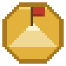

B5 · 第 3 关 · 高手B5 · Tier 3 · expert
登顶：两个互联网Summit: two internets
🔒 你的山脊清单还没勾完，建议先完成山脊。计分规则：起点营地至少 2 分、山脊至少 1 分，导师才给登顶计分。🔒 Your Ridge checklist isn't complete yet — finish the Ridge first. Scoring rule: your mentor scores the Summit only once Base Camp has at least 2 points and the Ridge at least 1.
中文互联网和英文互联网，像两个不同的图书馆。同一个问题换一种语言去问，常常会找到另一边没有的东西。这一关，你亲眼去看一看。The Chinese-language and English-language internets are like two different libraries. Ask the same question in the other language and you often find what the first side lacks. In this tier you see it for yourself.
三个步骤Three steps
- 1
做MAKE 换一种语言再搜一次Search again in your other language12 分钟12 min
起点营地你用中文搜的，现在用英文搜；用英文搜的，现在用中文搜。用第 4 周的翻译工具把关键词（不是整句）翻过去，最好用同一个搜索引擎。在新语言里找一个来源，写成第 4 张三行卡，并配一句第一眼判断——"可信"或"存疑"都可以，写明理由。If you searched in Chinese at Base Camp, search in English now; if in English, search in Chinese. Translate your keywords (not the whole sentence) with Week 4's translation tool, ideally in the same search engine. Find one source in the new language, write it as a fourth three-line card, and add its first-glance sentence — "trustworthy" or "doubtful" both count, with a reason.
浏览器可能会自动翻译页面。想看原文：点地址栏里的翻译图标，选"显示原文"。Your browser may auto-translate the page. To read the original, click the translate icon in the address bar and choose "Show original".
- 2
思REFLECT 一句"两个互联网"One "two internets" sentence6 分钟6 min
并排看你的两次搜索结果，在报告最后写一句具体的观察：Put your two result pages side by side and end your report with one concrete observation:
用【另一种语言】搜，我找到了第一次没有的……（或者：两边在……上差不多）Searching in [the other language], I found … that my first search didn't show (or: both sides were alike in …)结果不同不一定只因为语言——用词、搜索引擎、日期都会影响。写下你真正看到的就好。Results can differ for reasons beyond language — the words, the engine, the date. Just write what you actually saw.
- 3
交SUBMIT 更新报告，告诉导师Update the report, tell your mentor2 分钟2 min
重新发布同一页报告（链接不变），再给导师发一句话邮件，主题：B5 已更新 · 登顶 · 你的化名。Republish the same report page (same link), then send your mentor a one-line email with the subject B5 updated · Summit · your pseudonym.
公开学习者：不用发给导师——把更新后的链接再发进自己的邮箱，用量规自评登顶这一行。Open learners: no mentor email — send the updated link to your own inbox again and self-score the Summit row with the rubric.
登顶清单Summit checklist
新内容可以评分了（公开学习者：照量规自评）。还想看更远的风景？Your new work is ready to be scored (open learners: self-score with the rubric). Want an even wider view? 想学更多 →Want more →
常见问题FAQ
另一种语言我读得很吃力，怎么办？My other language is hard for me to read — now what?
用第 4 周的翻译工具帮忙读；挑一个短一点的页面就好。卡片上的标题照原文抄，判断句用你最顺手的语言写。Let Week 4's translation tools help you read, and pick a shorter page. Copy the title on the card as it appears; write your judgment sentence in whichever language comes easiest.
两次搜出来的东西差不多，这一句怎么写？Both searches found much the same — what do I write?
"差不多"也是一个发现。写清楚哪里差不多：同样的机构？同样的结论？同样的广告？具体就好。"Much the same" is a finding too. Say exactly where: the same institutions? the same conclusion? the same ads? Being specific is what counts.
没做完山脊，可以直接做登顶吗？Can I do the Summit without finishing the Ridge?
页面随时可以看，但导师按顺序计分：起点营地至少 2 分、山脊至少 1 分，登顶才计分。先把前两关补齐最划算。You can read it anytime, but your mentor scores in order: the Summit counts once Base Camp has at least 2 points and the Ridge at least 1. Finishing the earlier tiers first pays off most.
下一周：B6 我的数字工作台 · 第 7 周 →Next week: B6 My Digital Workspace · Week 7 →